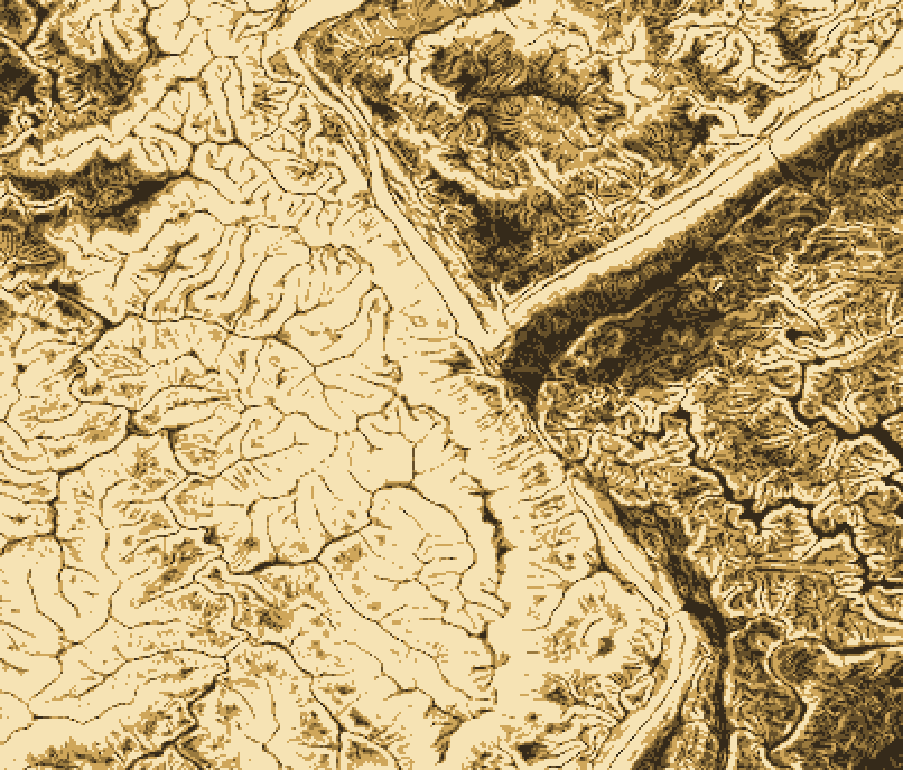

Site selection and development
Screen parcels for buildable area before buying land or drawing a site plan.
Maps / Slope map
A slope map measures how steep the ground is, cell by cell, from elevation data. It shows at a glance which land is flat enough to develop, where grading gets expensive, and where erosion and landslides are a risk.
Example
This sample covers about 30 × 32 km near Jacksboro, Tennessee, where the Jacksboro Fault cuts through the Cumberland Mountains. Bright areas are steep; dark areas are flat.

| Slope | Class | What it usually means | Share of area | km² |
|---|---|---|---|---|
| 0–5% | Flat to gentle | Suits most uses; the easiest and cheapest ground to build on. | 7.5% | 72 |
| 5–10% | Moderate | Buildable with some grading; fine for most roads and parking. | 11.4% | 108 |
| 10–15% | Strong | Buildings and roads need careful grading and drainage design. | 11.8% | 113 |
| 15–25% | Steep | Limited development; erosion control and engineering required. | 22.3% | 212 |
| 25% and over | Very steep | Usually avoided; high erosion and landslide risk. | 47.0% | 447 |
Thresholds vary by jurisdiction and use. We classify slope to match your local ordinance, design standard, or project brief.
Who uses slope maps
Screen parcels for buildable area before buying land or drawing a site plan.
Find steep, bare slopes where runoff and soil loss need controls.
Plan routes within grade limits, such as the 5% maximum running slope for accessible routes.
Flag steep ground for geotechnical review, together with soils and geology.
Combine slope with aspect to find gentle, sun-facing land for panels or crops.
Map steep-slope overlay districts and check proposals against them.
What you get
We source the best available model: USGS 3DEP lidar (1 m in much of the US), 10 m national coverage, or your own survey.
Calculate slope for every cell, then classify it into the thresholds you need and clean up slivers.
Deliver maps, data, and a short summary of buildable and constrained area.
Have a site in mind?
Share an address, a parcel ID, or a boundary file, and tell us what you're planning.